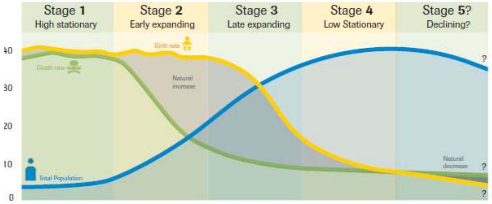
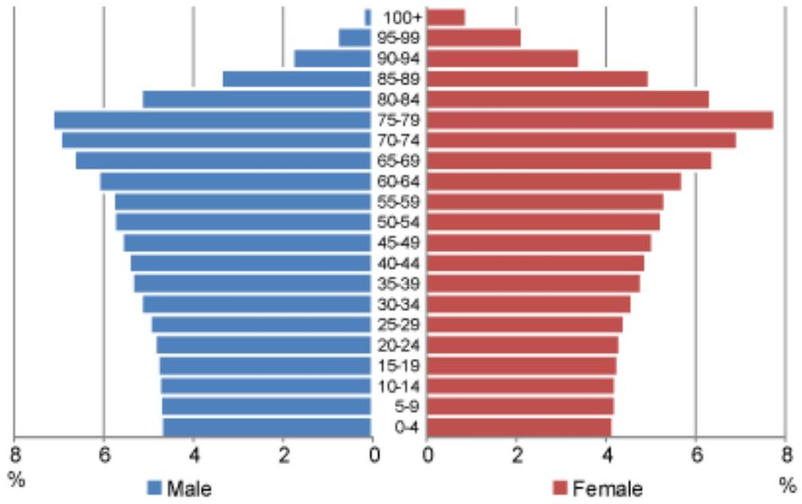
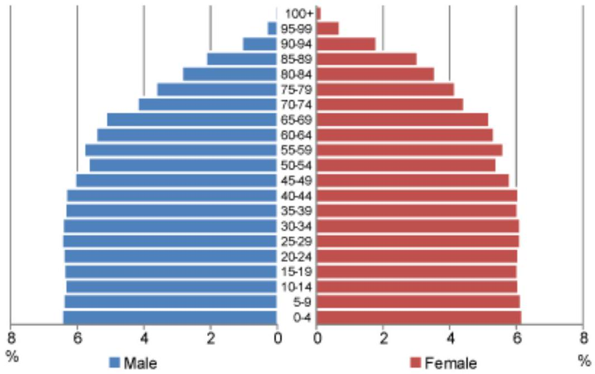

UNIT 2: POPULATION
The Definition of Population
The term population is used differently in demography and in statistics. In demography it relates to the number of people in a given area, while in statistics it is means the universe of units under consideration, which may be people or items.
However there are numerous ways of defining population in demographic way. This depends on whether one includes or excludes groups such as visitors, seamen, armed forces, diplomats, institutional population, those temporarily away or those missed by census.
Broadly there are two types of population counts; de facto and de Jure.
De jure- individuals are enumerated according to usual place of residence. This may be difficult in high mobility population. Residents temporarily away may be missed. This type of enumeration is free from influence of short term or seasonal mobility or migration hence may not reflect population actually present in area at a given time
De facto- this is enumeration of population where they are found on the census day. It avoids distinction between temporary or permanent residence
Population pyramids comprises of age sex composition;
There are about four population shapes:-
- Pyramidal - indicating high growth
- Rectangular - indicating slow growth
- Oval - indicating decline
- Hourglass - indicating increased pandemic e.g. AIDS driven decline
Characteristics of population
The population has the following characteristics:
1. Population Size and Density:
Total size is generally expressed as the number of individuals in a population. Population density is defined as the numbers of individuals per unit area or per unit volume of environment.
2. Population dispersion or spatial distribution:
Dispersion is the spatial pattern of individuals or arrangement in space of individuals in a population relative to one another. In nature, due to various interactions and influence of different factors, the following three basic population distributions can be observed:
- (a) Regular dispersion: In this type of dispersion/distribution, the individuals are more or less spaced at equal distance from one another. This is rare in nature but in common is cropland. It is also common among animals with territorial behavior
- (b) Random dispersion: In this type of Here the position of one individual is unrelated to the positions of its neighbors. This is also relatively rare in nature.
- (c) Clumped dispersion: Most populations exhibit this dispersion to some extent, with individuals aggregated into patches interspersed with no or few individuals. Such aggregations may result from social aggregations, such as family groups or may be due to certain patches of the environment being more favorable for the population concerned.
3. Age structure:
In most types of populations, individuals are of different age. The proportion of individuals in each age group is called age structure of that population. The ratio of the various age groups in a population determines the current reproductive status of the population, thus anticipating its future.
4. Natality (birth rate):
Population increase because of natality. It is simply a broader term covering the production of new individuals through births. In human population, the natality rate is equivalent to the birthrate.
5. Mortality (death rate):
Mortality means the rate of death of individuals in the population.
Population distribution
By October 2015, it was estimated that the size of the population of the world was nearly 7.3billon. But these billions of inhabitants are not equally distributed across the planet. Some areas are densely populated; others are not. Population distribution reflects levels of fertility, mortality and migration.
Population distribution is defined as the arrangement of the population on a certain area in accordance with conditions and requirements of the society.
- Arithmetic/crude density- total number of people divided by total land area
- Physiological/nutritional density- number of people supported by a unit of arable land (the number of people per unit area of arable land). A higher physiological density suggests that the available agricultural land is being used by many and may reach its output limit sooner than a country that has a lower physiological density
- Agricultural density (Agro-density/real population density)- ratio of number of farmers to the amount of arable land
- Nutritional density- this is another modified concept of population density. It is the measure of how much nutrition can be produced from land. It is a ratio between the total population and the amount of land under cultivation in a given area.
- Arable land- cultivable, land fit for cultivation by one farming method or another
- Population density- the number of people living in each unit of area such as a square mile or sq. km
- Carrying capacity- the maximum number of users that can be sustained, over the long term, by a given set of natural resources
- Ecumene- portion of the earth's surface occupied by permanent human settlement
- Non-ecumene- area of the earth's surface that humans consider too harsh for occupancy (approx.. 35-40%)
- Population drift- a gradual movement of people that lowers the population in one area and increases it in another
There are five characteristics of a population namely;
- Population size
- Population density
- Population distribution
- Age structure
- Reproductive base
Population Census
A population census can be defined as process of collection, reception, assessment, analysis, publication and distribution of demographic, economic and social data, which relate, at a given moment in time, to all the residents of a country or of a well-defined partial geographic area.
It is also the total process of planning, collecting, compiling, analyzing, and publishing or otherwise disseminating demographic, economic, and social data pertaining to all persons in a country or in a well-delineated part of a country at a specified time
Censuses are usually conducted every 10years in many countries. Population census provides information about age, sex, occupation, residence etc of people living in a particular country at a specific time.
Data collection procedures
- Establish administrative tree (census officers, supervisors, enumerators)
- Develop questionnaires (or the appropriate tool, usually census schedule)
- Define enumeration areas
- Cartography
- Define enumeration areas
- Pretest enumeration process
- Design data processing system
- Enumeration (postal with follow-up, general canvas)
Characteristics of a good population census
- Sponsorship-It must be conducted by government of the state or country where the census is taking place
- Defined territory- must relate to a country or well-defined geographic area
- Universality- the census provides data that covers all persons, households and dwellings in precisely defined territorial areas
- Simultaneity- it must be conducted at the same time throughout the country or region
- Individual enumeration- it must involve the physical counting of people and not by proxy
- Compilation and publication
- Small-area-data- the census allows data to be produced for the smallest geographic areas of a country and for small subpopulations, subject to the protection of confidentiality
- It must reveal the population of a country at a specified period of time
- Defined periodicity- it must involve counting at regular intervals eg. 10 years so that comparable information is made available in a fixed sequence
- It must involve experts who are knowledgeable in population studies and they must be of high integrity
Contents of census
A census contains:
- Demographic data (at least age and sex)
- Economic data (e.g occupation and income)
- Social (e.g education and housing)
Advantages/uses of census
- Population census is the primary source of basic national population data
- Required for administrative purpose
- For many aspects of economic and social planning and research
- Universal, hence small area data available
- National effort
- Provides frame for later sample surveys
- Provides population denominators
Limitations in census
- Size limits content and quality control efforts
- Cost limits frequency
- Lack of data for those unavailable during exercise
- The 5 or 10 year data cannot be up to date for a growing mobile population
- Takes a long time to analyze and disseminate results (delay between field work and results)
- Most notably data for nomadic population unreliable
- Sometimes politicized
Population growth
The world's population grew from around 650 million in 1650 to 1billion by 1850. It then took less than eighty years to double again in 1927. As the Agricultural Revolution resulted in more density
Factors and effects of population growth
Population growth is determined by fertility rates (the number of children per adult) and also death rates. Birth rates and mortality rates are in turn determined by a combination of factors. Often economic growth and economic development have led to a decline in population growth, but there are no hard and fast rules and other factors such as availability of family planning, social expectations and government intervention can play an important role.
The four main factors that influence population growth are;
- Fertility (birth rates)
- Mortality
- Migration
- Life expectancy
The other factors that influence population growth include;
- Cost of education. In developed countries, education is usually compulsory until the age of 16. As education becomes compulsory, children are no longer economic assetsbut economic costs. In the US, it is estimated that a child can cost approximately $230,000 by the time they leave college. Therefore, the cost of bringing up children provides an incentive to reduce family size.
- Economic growth/development. Countries which are in the early stages of economic development tend to have higher rates of population growth. In agriculturally based societies, children are seen as potential income earners. From an early age, they can help with household tasks and collecting the harvest. Also, in societies without state pensions, parents often want more children to act as an insurance for their old age. It is expected that children will look after their parents in old age. Because child mortality rates are often higher, therefore there is a need to have more children to ensure the parents have sufficient children to look after them in old age.
- Quality of children. Gary Becker produced a paper in 1973 with H. Gregg Lewis which stated that parents choose the number of children based on a marginal cost and marginal benefit analysis. In developed countries with high rates of return from education, parents have an incentive to have a lower number of children and spend more on their education- to give their children not just standard education but a relatively better education than others. To be able to give their children the best start in life, it necessitates smaller families. Becker noted that rising real GDP per capita was generally consistent with smaller families.
- Welfare payments/State pensions. A generous government pension scheme means couples don't need to have children to provide an effective retirement support when they are old. Family sizes in developing countries are higher because children are viewed as 'insurance' to look after them in old age. In modern societies, this is not necessary and birth rates fall as a result.
- Availability of contraception (family planning). Increased availability of contraception can enable women to limit family size closer to the desired level. In the developing world, availability of contraception is more limited, and this can lead to unplanned pregnancies and more rapid population growth. In Africa in 2015, it was estimated that only 33% of women had access to contraception. Increasing rates would play a role in limiting population growth.
- Female labor market participation. In developing economies, female education and social mobility are often lower. In societies where women gain a better education, there is a greater desire to put work over starting a family. In the developed world, women have often chosen to get married later and delay having children (or not at all) because they prefer to work and concentrate on their career.
- Social norms/Cultural attitudes to family size (social and cultural factors). India and China (before the one child policy) had strong social attachments to having large families. In the developed world, smaller families are the norm.
- Net migration (immigration levels). In some countries biggest drivers of population growth come from net migration. In the UK from 2000 to 2013, around 50% of net population growth came from net international migration. Countries like Japan with very strict immigration laws have seen a stagnation of population.
- Health care standards (death rates). Level of medical provision. Often death rates are reduced before a slowdown in birth rates, causing a boom in the population size at a certain point in country's economic development. In the $19^{\text{th}}$ and early $20^{\text{th}}$ century, there was a rapid improvement in medical treatments which helped to deal with many fatal diseases. Death rates fell and life expectancy increased.
- Government policy-pronatalist population policies will see an increase in the size of the population while an anti-natalist approach will be characterized by a decline in population size
- Historical factors/wars. In the post-war period, western countries saw a 'boom' in population, as couples reunited at the end of the Second World War began having families. The 'baby-boomer' period indicates population growth can be influenced by historical events and combination of factors which caused a delay in having children until the war ended.
Consequences of population growth
Rapid human population growth has a variety of consequences.
- Depletion of natural resources
- Degradation of the environment
- Conflicts and wars
- Rise in unemployment
- High cost of living
- Population grows fastest in the world's poorest countries. High fertility rates have historically been strongly correlated with poverty and high childhood mortality rates
- Falling fertility rates are generally associated with improved standards of living, increased life expectancy and lowered infant mortality
- Overpopulation and poverty have long been associated with increased death and disease. People tightly packed into unsanitary housing are inordinately vulnerable to natural disasters and health problems.
- Poverty is a condition of chronic deprivation and need at the family level. Poor people lack access to enough land and income to meet basic needs deeper into poverty.
Population control
The problem of population growth, whether positive or negative, can be controlled for using approaches such as;
- Empower women
- Improve family planning
- Make education more interesting
- Government incentives
- Government policies
- Empower people economically
- Knowledge of sex education
Population theories
The Demographic Transition Theory
The most prominent explanation for the growth of human populations is demographic transition theory (DTT). Changes in the size of the world's population over a certain period of time are due entirely to changes during the same time period in fertility and mortality (migration, obviously, does not figure into the equation when the focus is on the world).
The world population changes its size over a given time interval by adding persons born during the period and subtracting persons dying.
Demographic transition emphasizes the strong interrelationship between population structure, fertility and mortality which lie at the heart of formal demography.
The DTT was first developed by an American demographer known as Warren S. Thompson (1929) and Frank W. Notestein (1945), Blacker (1947) and extended by Kingsley Davis (1963) among others.
There are a series of stages during which a population moves from a situation where both mortality and fertility rates are high to a position where both mortality and fertility are low. Both before and after the transition, population growth is very slow, but in between, during the transition population growth is very rapid, essentially because the decline in mortality occurs before the decline in fertility.
The theory is essentially a description of historical process that is thought to be a common experience of the industrialized nations in the west. The population growth in western countries is observed with a fall in mortality ahead of fertility.
The population change can be divided into five stages representing a process that can be looked at closely as to be related to stages in economic development of a country. The theory proposes that five stages of mortality and fertility change occur in the process of societal modernization.
Stage One
It is also known as pre-modern or high stationary stage.
It presents the pre-transitional or pre-industrialization stage. Because of the high birth and death rates that occurred during this stage, it is sometimes referred to as the stage of high growth potential because of the great potential for population growth if mortality were ever to fall.
It is characterized by high birth and death rates and stable population growth. It shows high rates of fluctuating mortality and high fertility. The relative instability of the mortality rates means that during this stage, there were some periods of natural increase and some of natural decrease, but over the longer period, there was very little change in population size.
No countries in the world today are located in the first stage.
The high death rates are due to;
- Lack of knowledge on disease prevention and cure
- Occasional food shortages
- Outbreak of infectious diseases such as influenza
- Lack of clean water and efficient sewage disposal
- Poor food hygiene that killed many especially children
- Water and foodborne diseases such as cholera, typhoid and TB
- Wars led to indiscriminate deaths of both adults and children
Birth rates were high due to;
- Societies depended heavily on agricultural productivity or unskilled manual labor. Due to that, larger families translated to a larger workforce.
- High birth rate could also be a response to a high death rate and so the population was striving to attain or maintain replacement level fertility.
- Lack of incentives in rural communities to control fertility
Stage Two
It is referred to as early development stage.
For numerous reasons, mortality began to decline in many countries of the world.
There is a rise in population caused by a decline in the death rate while the birth rate remains high, or perhaps even rises slightly. The second stage of the demographic transition model is marked by the death rate rapidly falling. The decrease in death rate is attributable to;
- Significant improvements in overall health specifically access to pediatric care which affects the life expectancy of newly born children and the under-five children (most atrisk demographic group).
- There was also expanded education system meaning that people were equipped with the skills on healthy living and major disease risk factors. They could make better health choices.
- Gender equality meant that there was improved awareness of the role of women in decision-making especially regarding seeking health services.
- Technological advances in the areas of food production led to increased food production and storage for future use meaning that adverse effects of famine were mitigated. These improvements included;
- Crop rotation
- Selective breeding
- Seed drill technology
- Introduction of potato and maize from South America which increased food quantities especially in northern Europe
- Improved sanitation- access to clean and potable water significantly reduced disease outbreaks. This coupled with improved hygiene reduced death attributed to poor environmental hygiene.
- Improvements in food handling, sewage disposal and general personal hygiene
Another characteristic of Stage Two is a change in the age structure of the population. As more children survive, the age structure becomes increasingly youthful. This trend is intensified as this increasing number of children enter into reproduction while maintaining the high fertility rate of their parents
Many of the least developed countries today are in Stage 2
Stage Three
The population moves towards stability through a decline in birth rate.
Here birth rates gradually decrease as a result of;
- In rural areas continued decline in childhood death means that at some point parents realize they need not require so many children to be born to ensure a comfortable old age.
- Improved economic conditions- increasing urbanization changes the traditional values placed upon fertility and the value of children in rural society. Urban living also raises the cost of dependent children to a family
- Increasing female literacy and employment (increase in women's status)
- Improvements in contraceptive technology and access to contraception
Population growth continues but at a lower rate.
Most developing countries are in Stage 3.
Stage Four
Birth and death rates are both low, stabilizing the population. In this stage the population age structure has become older.
Countries in this stage tend to have;
- Stronger economies
- Higher levels of education
- Better health care
- A higher proportion of working women
- Fertility rate of around 2 children per woman
Most developed countries are in Stage 4 but a few have moved into Stage 5
Stage Five
This is characterized by a situation in which fertility rates have fallen significantly below replacement level ( 2 children) and the elderly population is greater than the youthful population
A country in Stage 5 experiences loss to the overall population as the death rate becomes higher than the birth rate. The negative population growth rate is not an immediate effect however. Based on demographic momentum (a situation in which total population growth increases even while birth rates decline) it will take a generation or two before a negative population growth rate is observed.
Birth rates are low because of;
- Better family planning methods
- Improved economy
- Improved female education
- High costs of raising a family in cities
- Employment opportunities delay child bearing
Limitations/Disadvantages of Demographic Transition
- Derived from data in developed countries whose conditions greatly differ from developing countries
- The impact of other demographic variables such as migration are not considered
- It does not predict how long a country will be in each stage
- In France and Europe (developed countries), fertility rates fell before death rates
Usefulness of Demographic Transition
- Influences the development of demography as a subject
- Migration is thought not being part of demography
Population structure/composition
Population structure means the 'make up' or composition of a population. Looking at the population structure of a place shows how the population is divided up between males and females of different ages (or age groups)
Age and sex composition provides a glimpse of a country's demographic history- reflecting past trends in births, deaths and migration- as well as a view toward its demographic future. The age and sex structure of a given population affects many of its characteristics for example knowing that some parts have high median ages and relatively few young people in their populations provides insight into the patterns of population decline
Sex composition
Sex ratio is the ratio of males to females in a population. The primary sex ratio is the ratio at the time of conception, secondary sex ratio is the ratio at time of birth, and tertiary sex ratio is the ratio of mature organisms.
Sex between males and females of different ages (or age groups)
Sex structure is one of the most important and relevant features of human societies. Regarding demographic study, the interaction of sex structure with the three demographic processes is of paramount importance. But the importance of sex structure extends far beyond demography. A society's sex structure has important implications for socioeconomic and demographic development, as well as for labor force participation and gender relations.
The overall sex ratio is simply the ratio of males to females in the population. It is normally expressed as the number of males per 100 females i.e. sex ratio = males x 100 females. The overall sex ratio is entirely determined by: -
- The sex ratio at birth
- Sex differences in mortality
- Differential migration
Sex ratio is normally around 105 boys are born for every 100 girls but it does vary between population and subgroups.
Note that if the sex ratio at birth is 105 , then after every 205 births on average 100 are females i.e the proportion that are female is thus $\frac{100}{205} = 0.488$
Sex difference in mortality and migration cause the sex ratio to very between ages. In most parts of the world, female mortality is lower than male mortality at all ages. Women live longer on average than men. Thus the sex ratio tends to decline with age
- Pattern by age
- Higher at very young ages
- Gap narrows with increasing age
- Goes below 100 by middle age
- Other characteristics
- Varies from one population to another
- Desirable to consider separately the sex ratio of important component subgroups (e.g. by race, by ethnicity)
Determinants of sex composition
Case study: Female foeticide: An evil in India
"It is an extreme manifestation of violence against women." Female fetuses are selectively aborted after pre-natal sex determination.
Reasons;
- Caste system
- Economic oppressions
- Denial of right to property
- False sense of impurity
- Deprivation of education
- Social mentality
- Abortion-4-12million girls aborted over the last 3 decades
- First child and second child
- Female infanticide- deliberate killing of new born female children
- Sex determination
Steps taken by the government;
- Banning sex determination
- Women empowerment
- Job reservation for women
Calculations of sex ratio
Sex Ratio of Births-Number of male births per 100 female births =
Values: Ratio < 100 → More female than male births
= 100 → Same number of male and female births
> 100 → More male than female births
In human populations, there are more male births than female births, with ratio generally between 104 and 107
Important characteristics which distinguish births with respect to their sex ratio are age of mother, order of birth, or race
Age composition
Demographers' definition of age-Completed age, i.e. age of an individual at last birthday Most important variable in demographic analyses
Data Collection on Age
Data on age may be secured by;
- Asking a direct question on age
- Asking a question on date of birth, or month and year of birth
- Or a combination of these
Measures of age
Dependency Ratio
Proportion of population in each age or age group
Dependency Ratio
One frequency used index summarizing on age distribution is known as the dependency ratio; strictly, this is the ratio of economically active to economically inactive persons in a population. However, because of lack of data or difficulties in defining economic activity in many countries a ratio of age group is used instead. Then the ratio is just:
$$ \text{Dependency ratio} = \frac{(\text{Children} + \text{Elderly})}{\text{Working Ages}} \times 100 $$
The praise age used depends very much on the population being studied, probably school leaving age 18 years in Kenya and retirement age of 55 years.
The determinants of age structure
The age structure and age distribution in any given population is entirely determined by the levels of mortality, fertility and migration occurring in the past. These three ( 3 ) factors affect distribution in different ways and to different extent.
- Changes in the levels of fertility will at first affect just younger age groups, and only over many years will it work through to affect older ages. The effect of fertility changes can thus be very dramatic, especially if the rise or fall is rapid.
- Variations in the level of infant mortality tends to produce an effect very similar to that caused by change in fertility affecting initially the young ages, and only gradually working through to the whole age range.
- A change in adult mortality has however, generally, a much less dramatic impact on the shape of an age distribution than either fertility or infant mortality. This is because it is largely not concentrated in one age group but is spread over all ages.
- Migration can cause big distortion in age distributions because it is largely not concentrated among young adults and is sometimes also sex selective. Areas from which substantial numbers have emigrated will in extreme cases have top heavy pyramids with a high proportion of the population in older age groups, few young adults and consequently, few children conversely areas where substantial numbers of immigrants have settled will have a young age structure, with many children and very few elderly.
Overall therefore, an age distribution is best regarded as being determined primarily by fertility and modified, to a greater or lesser extent, by mortality and migration.
Population pyramids
A population pyramid is a graph that allows us to see the gender and age structure of a population.
Population pyramids are graphical representations of the age and sex of a population. For this reason, population pyramids are also referred to as age-sex pyramids. We refer to these graphs as pyramids because they are usually shaped like triangles, although they can also take other shapes. There are different shapes of pyramids which tell us different things about the population of the country.
Population pyramids show the age-sex structure of a population. They are also potentially very informative about the history of a population and its future prospects.
There are a few simple rules for the construction of population pyramids:
- Population pyramids consist of two histograms placed on their side and back to back.
- They can show absolute numbers or percentages, but the x-axis must be labeled accordingly. When comparing populations, percentages should be used.
- If percentages are used, these must be calculated for each age-sex group from the total population (males and females), not just the total population of a single sex.
- Age is depicted on the y-axis, with the youngest at the bottom, and must be labelled accordingly.
- Age scale can be in single years, or five year age groups depending on the precision needed.
- The age groups used must be of equal width, apart from the final open ended age group.
- Statistics for males are plotted on the left, and females on the right.
Population pyramids are often useful to divide the population into 3 distinct age groups or cohorts:
0-15 or the young
16-65, the working age and
65+ as retired sectors of the population
Knowing the percentage of people in these sectors can allow us to calculate the Dependency Ratio. This is the ratio between those of working age and those of non-working age. The nonworking age are known as dependents because they depend upon the working age people to provide for their needs.
Describing population pyramids
There are certain terms which are commonly used to describe age structures of populations, such as 'young', 'old', 'declining' etc. The table below shows the three most common types of population pyramid, with descriptions of the features of each.
Young and growing
Young populations have a typical 'pyramid' shape, with a broad base indicating high proportions of children. Indicates a population undergoing rapid growth.

Population pyramid for Mali, 2010. Source: UN Population Division (2011)
Old and declining
A top-heavy population pyramid with higher proportions in older age groups indicates a declining population. This may result from a long period of below replacement fertility, alongside low death rates.
Population pyramid for Japan, 2050 (medium-variant projection). Source: UN Population Division (2011)
Stationary
A more rectangular population pyramid indicates a population which is neither growing nor declining. There are similar proportions in each age group, apart from at the oldest ages (due to mortality). The population pyramid to the right is just an approximation of what a stationary population would look like. The small fluctuations at age groups 40-59 show that this is not truly a stationary population.
Population pyramid for the United States, 2050 (medium-variant projection). Source: UN Population Division (2011)
Summary measures to describe the age structure of a population include:
- Proportion of the population under a certain age (often 15) or over a certain age (often 65)
- Median age of a population i.e. the age which half the population are younger and half the population is older
- Dependency ratios
- Child dependency ratio
- Old age dependency ratio
Summary measures to describe the sex structure of a population include:
- Sex ratio of the total population
- Sex ratio at age x
- Sex ratio at birth
Types of population pyramids
There are three types of population pyramids: expansive, constrictive and stationary.
- Expansive population pyramids: They depict populations that have a larger percentage of people in younger age groups. Populations with this shape usually have high fertility rates with lower life expectancies. Many third world countries have expansive population pyramids.
- Constrictive population pyramids: They are named so because they are constricted at the bottom. There is a lower percentage of younger people. Constrictive population pyramids show declining birth rates, since each succeeding age group is getting smaller and smaller. The United States has a constrictive population pyramid.
- Stationary population pyramids: They are those that show a somewhat equal proportion of the population in each age group. There is not a decrease or increase in population; it is stable. Austria has a stationary population pyramid.
Stages of population pyramids
There are five stages of population pyramids;
- High fluctuating
- Early expanding
- Late expanding
- Low fluctuating
- Natural decrease
A. High fluctuating (first stage)
High fluctuating population pyramids have wide bases and narrow tops which indicates that there are few older people in the population and a high percentage of young people. These pyramids are also concave due to their high birth and death rates and low life expectancies. They always represent least developed countries.
B. Early expanding (second stage)
In this stage people are reproducing at a higher rate than they die. Populations in this stage still have low life expectancies and high birth rates. Their pyramids are triangular shaped. They are called early expanding because the populations grow rapidly as many more children are added to the population than people dying. They always represent less economically developed countries (LEDCs)
C. Late expanding (third stage)
The top is still shaped like a pyramid however the bottom begins to level out as the birth rates becomes more stable and life expectancy continues to increase.
D. Low fluctuating (fourth stage)
These populations are stable and are growing slowly as the number of the young is just above the number of people dying. The older people are living for a long time (high life expectancy) with a lot of workers and reasonable numbers of children. They represent more economically developed countries. Some economically developed countries (MEDCs) actually have declining populations where there are not enough children being born each year to replace those dying. As negative growth in a country continues the population is reduced. A population can shrink due to a low birth rate and a stable death rate. Increased out-migration may also be a contributor to a declining population.
E. Natural decrease (fifth stage)
The population is ageing and declining. They have a very narrow base because birth rates are below the replacement level and people have very long life expectancies which explains the wide tops.